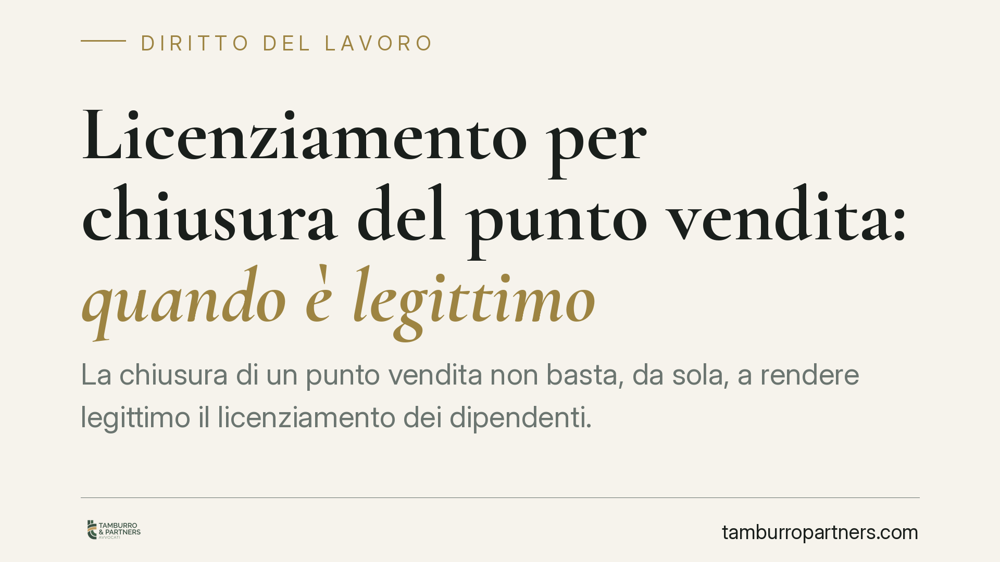

Licenziamento per chiusura del punto vendita: quando è legittimo
La chiusura di un punto vendita non basta, da sola, a rendere legittimo il licenziamento dei dipendenti. La Cassazione richiede la prova di una reale ragione organizzativa, il rispetto dell'obbligo di ricollocazione e criteri di scelta trasparenti quando più lavoratori svolgono mansioni fungibili. Vediamo cosa serve perché il recesso regga davanti al giudice.

Il caso e perché conta
La chiusura di un negozio è una decisione imprenditoriale legittima e insindacabile nel merito. Ma non tutto ciò che è legittimo sul piano economico lo è anche su quello giuslavoristico. Il licenziamento dei dipendenti collegato alla chiusura di un punto vendita rientra nel cosiddetto giustificato motivo oggettivo (GMO) e deve superare una serie di verifiche precise.
La questione riguarda in particolare le catene commerciali e la grande distribuzione organizzata (GDO), dove la chiusura di una sede non coincide quasi mai con la cessazione dell'intera attività. È proprio in questo scarto che si concentra il contenzioso.
Inquadramento normativo
Il riferimento è l'art. 3 della Legge 15 luglio 1966, n. 604, che definisce il giustificato motivo oggettivo come quello determinato "da ragioni inerenti all'attività produttiva, all'organizzazione del lavoro e al regolare funzionamento di essa".
La giurisprudenza ha progressivamente riempito di contenuto questa formula. Perché il licenziamento sia legittimo occorrono tre elementi concorrenti:
- una ragione organizzativa effettiva (la chiusura reale del punto vendita);
- il nesso causale tra quella ragione e la soppressione della specifica posizione lavorativa;
- l'impossibilità di ricollocare il lavoratore in altra posizione compatibile (il cosiddetto obbligo di *repêchage*).
La Cassazione, Sez. Lavoro, n. 31409/2023 ha ribadito che l'onere di provare tutti questi presupposti grava sul datore di lavoro, incluso il repêchage. La sentenza n. 13953/2015 aveva già chiarito che la chiusura di una sede non esaurisce la valutazione: se l'impresa dispone di altre unità produttive, occorre verificare la possibilità di reimpiego del dipendente.
Cosa significa davvero l'obbligo di repêchage
È il punto in cui più spesso i licenziamenti vengono dichiarati illegittimi. Il termine (dal francese "ripescaggio") indica l'obbligo del datore di verificare, prima di licenziare, se il lavoratore possa essere collocato in un'altra posizione disponibile nell'organizzazione, anche in mansioni equivalenti o inferiori purché compatibili.
Nella GDO questo significa guardare oltre il singolo negozio: altri punti vendita nella stessa area, magazzini, funzioni di back office. Se al momento del licenziamento esistevano posizioni vacanti compatibili e non sono state offerte, il recesso rischia di cadere.
Attenzione però ai limiti: il repêchage non impone di creare posizioni inesistenti, né di spostare il lavoratore in sedi geograficamente incompatibili senza il suo consenso. La verifica è ancorata alle posizioni effettivamente disponibili al momento del recesso.
I criteri di scelta quando i lavoratori sono più di uno
Se la chiusura coinvolge una posizione ma esistono più dipendenti con mansioni fungibili (cioè intercambiabili) in altre sedi non chiuse, il datore non può scegliere in modo arbitrario chi licenziare. La giurisprudenza richiede l'applicazione, in via analogica, di criteri oggettivi ispirati a quelli dei licenziamenti collettivi: carichi di famiglia, anzianità, esigenze tecnico-produttive.
Una scelta priva di criteri verificabili espone il licenziamento all'annullamento per violazione dei principi di correttezza e buona fede.
Implicazioni pratiche
Per il datore di lavoro, la chiusura di un punto vendita non è un salvacondotto. La motivazione della lettera di licenziamento deve essere specifica e la posizione organizzativa deve risultare documentabile. L'assenza di prova sul repêchage è la causa più frequente di soccombenza.
Per il lavoratore, la chiusura del negozio non chiude automaticamente ogni spazio di tutela. È utile verificare se l'impresa avesse altre sedi operative e posizioni disponibili al momento del recesso.
Cosa fare in concreto
- Datori di lavoro: documentate per iscritto la ragione organizzativa e mappate tutte le posizioni disponibili nell'intera azienda prima di procedere.
- Datori di lavoro: in presenza di più lavoratori fungibili, definite e verbalizzate criteri di scelta oggettivi.
- Lavoratori: conservate comunicazioni, organigrammi e ogni prova dell'esistenza di altre sedi o posizioni aperte.
- Lavoratori: valutate l'impugnazione entro 60 giorni dalla ricezione del licenziamento, con successivo deposito del ricorso nei termini di legge.
- Entrambi: fatevi assistere prima di formalizzare atti, non dopo.
Disclaimer
Contributo informativo a cura di Tamburro & Partners - Avv. Giuseppe Tamburro. Non costituisce parere legale.
Ogni storia di lavoro ha i suoi tempi.
Se gestisci HR e vuoi un confronto su contenzioso, ispezioni o licenziamenti, scrivi allo studio. Ti rispondiamo entro un giorno lavorativo.